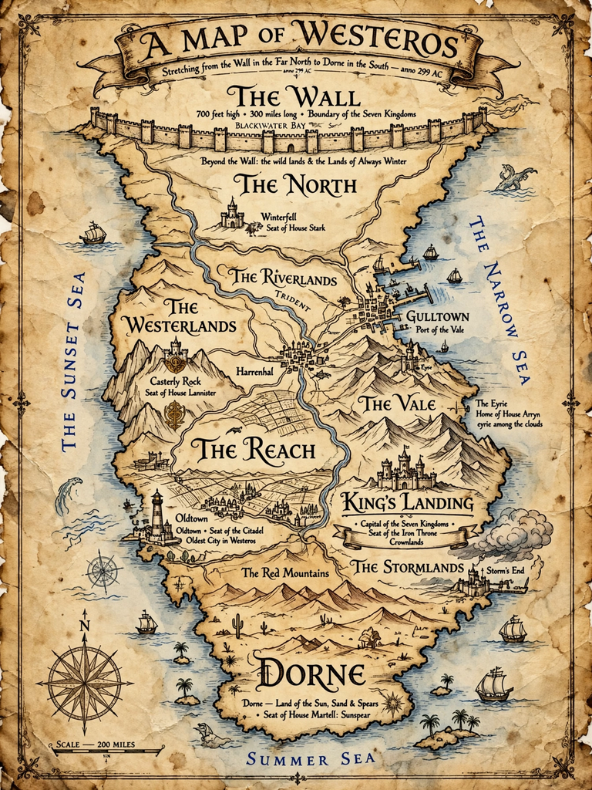

| Westeros | |
|---|---|
| Series | A Song of Ice and Fire |
| Created by | George R. R. Martin |
| Type | Fictional continent |
| Capital | King's Landing |
| Government | Feudal monarchy (the Seven Kingdoms) |
| Ruler | King/Queen on the Iron Throne |

Westeros is a fictional continent in George R. R. Martin's fantasy series A Song of Ice and Fire and its television adaptation Game of Thrones. It is a large landmass, roughly comparable in scale and medieval character to a fantastical version of the British Isles and western Europe, bounded by the Sunset Sea to the west and the Narrow Sea to the east, which separates it from the continent of Essos.
Westeros extends from the frozen lands Beyond the Wall in the far north to the deserts of Dorne in the south. Its major regions — the Seven Kingdoms — comprise the North, the Iron Islands, the Riverlands, the Vale of Arryn, the Westerlands, the Stormlands, the Reach, the Crownlands, and Dorne. A vast wall of ice, the Wall, defended by the Night's Watch, marks the northern frontier. The seasons in Westeros are irregular, with summers and winters lasting years; the words of House Stark, "Winter is coming", reflect this dread.
The continent was first inhabited by the Children of the Forest and later settled by the First Men, followed by the Andals, whose invasion shaped its dominant culture and the Faith of the Seven. Three centuries before the novels begin, Aegon Targaryen conquered and united six of the seven kingdoms with the aid of dragons, forging the Iron Throne from the swords of his enemies. The instability following the death of King Robert Baratheon ignites the War of the Five Kings, the central conflict of the series.
Westerosi society is feudal: great houses such as Stark, Lannister, Baratheon, Targaryen, and Tyrell rule regions in the king's name, with sworn bannermen, knights, smallfolk, and an order of scholar-advisers, the maesters of the Citadel in Oldtown.
A Song of Ice and Fire · Game of Thrones · Essos · House Stark